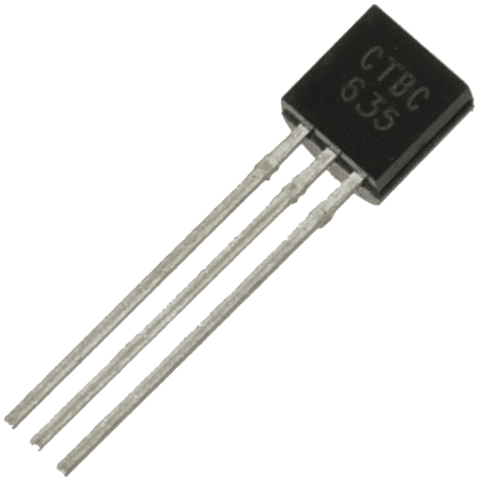
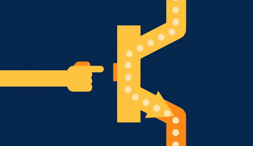
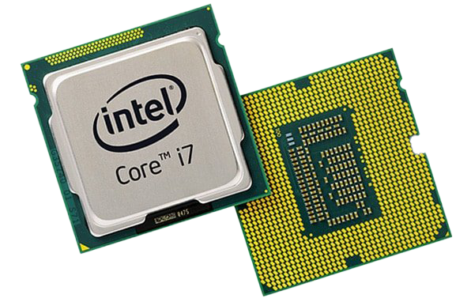
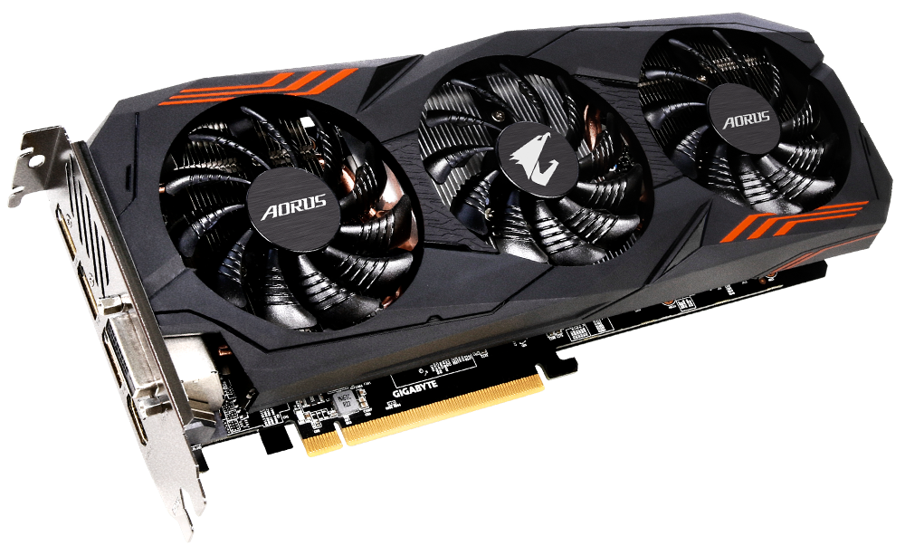
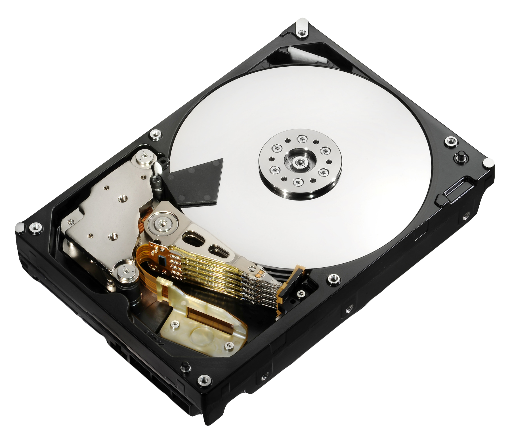
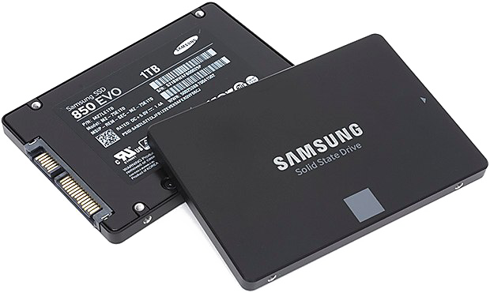
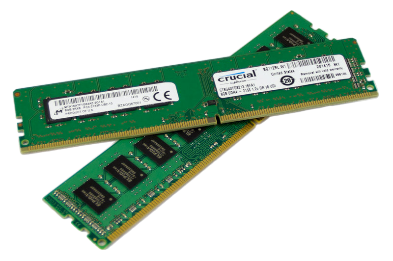

COMPUTER
NOTE :
This Section existed to prepare you for coding , the informations may be overwhelming [ But important ] for the people new to computers hardware , so if you already know them or found it boring , you can jump to " CODING " section directly
COMPUTERS
So We communicate with a computer using coding but computers don't understand it directly . Computers ONLY speaks 0's and 1's . 0's and 1's ? They are called Binary . OK ... A Quick Lesson about Computer Hardware .
TRANSISTOR

TRANSISTOR
This piece my friend exist inside every computer . So what do we mean by 0 and 1 [ Binary ] , They are just a meaningful term to identify if the electricity flow through the transistor , if it is then the computer sends 0 , if it is not , it sends 1 . So what is the factor that change transistor phase from 0 to 1 [ OFF / ON ] . Us , we tell the computer what to to do so we command it whether it turn the transistor on / off [ 1 / 0 ] . Are they required for this lesson ? perhaps they are essential to understand how computers works exactly , computers are not magical machines they are just complex .
TRANSISTOR-WORK
So lets make a sumup . Transistor controll the flow of electricity , and if transisitor is ON [ electrcity flow ] it sends 1 , if transistor is OFF [ no electricity flow ] it sends 0 , how it change ? According to our commands . But HOW ? i mean computers understand more than that , it can make calulations and display colors . YES , Computers can do that by using a combination of Transistor . Now a days computers have billions of transistors under the hood , For Example if we have 2 transistors the first is ON and second is ON it gives the number 3 . In computers when working with binary systems , they call the transistors a BIT [ 3 bit = 3 transistors ] , and each transistor can hold a Binary number [ 0 / 1 ] and by the combination we can make all the numbers , characters , words , fonts , symbols ... Video
ENJOY-LEARNING
OKAY ... So transisitors make numbers and characters or any symbol we want , But who make the calculations inside the computer ? THE PROCESSOR [ the brain of the computer ]
ROCESSOR

C P U
The Processor or CPU ( Central Process Unit ) is the man in charge inside the computer body , it take the commands , analyze , scan , calculate , sends and recieve . Inside the processor there is many other pieces that do the work for us [ ALU , Control Unit , Memory Unit ] and of course there is no need to memorize them . OKAY ... But if the process is in the center and don't move , then who control the transmission ? Buses they are lines of silicon than transmit the electricity and change transistors phase [ ON / OFF ] and by that processor take the command analyze it then send it to us
And if you were Wondering what is the " Intel " means [ on the CPU ] , it is the company that manufacture this ships [ CPU ] , and of course there is other companies but this is the most popular one .
GPU

GRAPIC PROCESSING UNIT
This beast my friend is the dream of every gamer , will at least me . This Piece control The Graphics of the computer , It has many similar functionality as CPU . Texture , colors , screen [ Screen is made up of pixel and every pixel is an RGB which means 3 options Red-Green-Blue ] , Load the game ... every single pixel on the screen the GPU control it , change it according to our commands ( or other people commands ) .
MEMORY
1 . MAIN - MEMORY
HARD-DISK
The hard disk is the main memory . It is used to store our data , like images , videos , games save , softwares and pretty much everything . But now a day Most computers don't use it , They use the new one , the big guy , the piece that every company use to enhance their consoles like SONY ( Playstation ) and Microsoft (XBOX ) [ Console is a computer that only run games and some other tools and softwares ] .
SSD
SSD stands for Solid-state Drive ( not important ) - So why this is the beast what's wrong with the hard drive , Lets make a Table of Comparison to figure out the Differences
| HARD DRIVE | SSD |
|---|---|
| SLOW | FAST |
| Noisy | Silent |
| Cheap | Expensive |
| High Capacity | Low Capacity |
There is more but they are quite enough to distinguish between them
2 . FAST - MEMEORY
RANDOM - ACCESS - MEMORY
Random Access Memory [ RAM ] its main functionality is to store temporar Data , Where your softwares / games can access some space to store data . There is Two Types of storage in RAM stack and heap [ they will be discussed while Learning How To Code ]
IF you made it till here , Congratulations ! You are Spending your time wisely and we are happy for that . If you found Reading Boring We hope that this courses will help you to understand better ( Video Link )